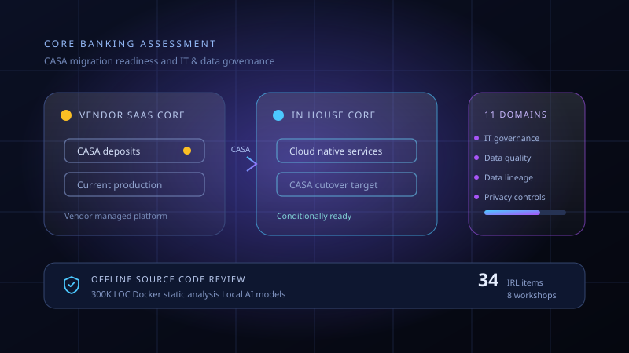
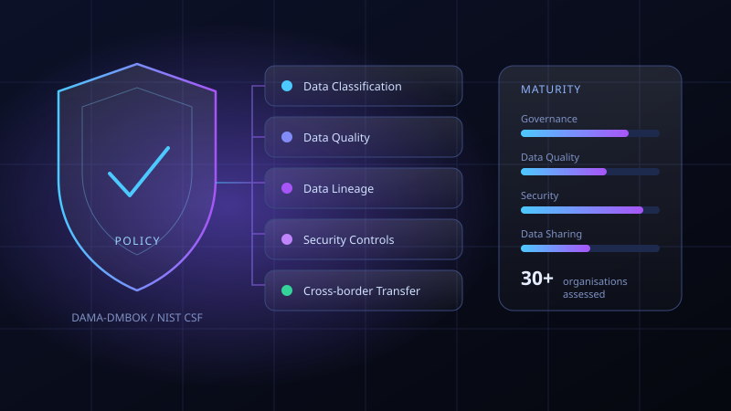
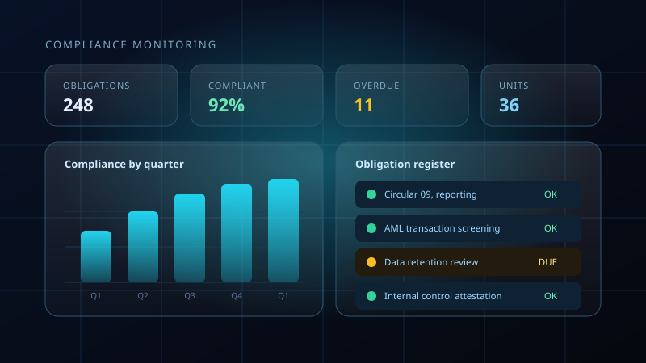
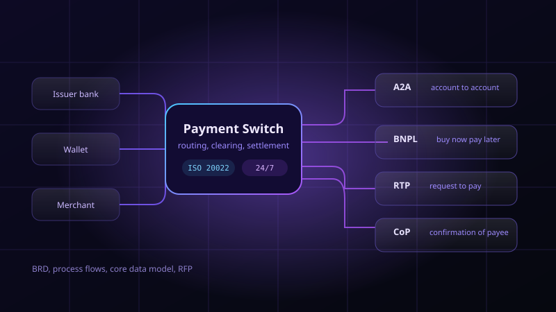
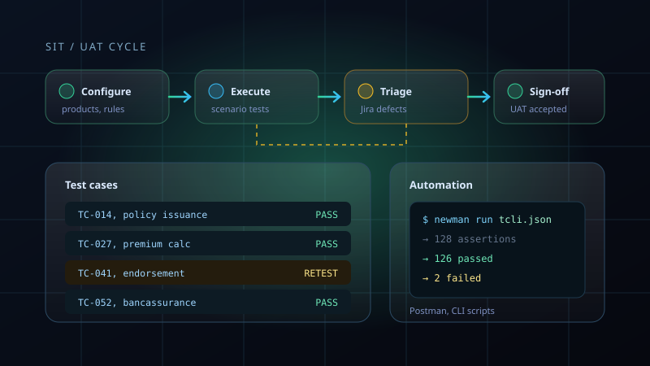
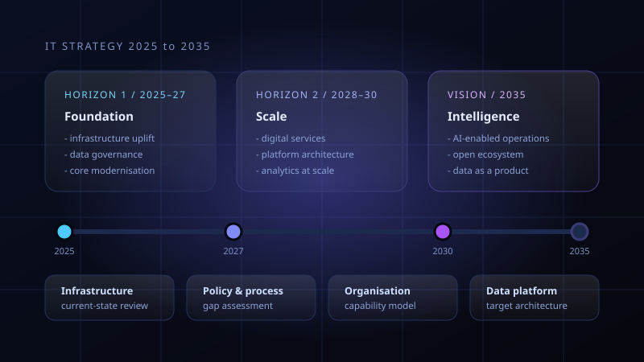
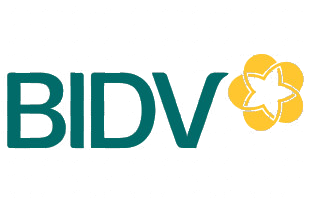
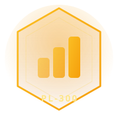
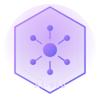

Core Banking & IT and Data Governance Advisory
Assessed readiness to migrate CASA from a vendor SaaS core to an in-house cloud-native core while establishing a baseline for the bank's IT and data governance framework.
Available for opportunities
Data governance, data quality and business analysis for banking, financial services and insurance.
Trung Nguyên
Senior Consultant, EY Vietnam
Data Governance & Business Analysis
Hanoi, Vietnam
Tech Stack
Featured Projects

Assessed readiness to migrate CASA from a vendor SaaS core to an in-house cloud-native core while establishing a baseline for the bank's IT and data governance framework.

Assessed data governance, data security and Big Data adoption across the banking sector, benchmarked international practice and built a proposed policy and governance framework.

Delivered a compliance monitoring platform for a leading bank, covering interactive Tableau dashboards, BRD and user documentation, data mapping and go-live support.

Preliminary solution design for a leading payment service provider: process flows, UI prototypes, core data model and metadata, plus RFP preparation.

Implemented a modern core insurance platform on InsureMo: scenario-based system testing, SIT/UAT planning, Postman automation and Jira defect resolution.

Long-term IT strategy for a leading financial services company, covering payment technology trend analysis, current-state assessment and target architecture recommendations.
Experience
Senior Consultant, Technology Consulting
Apr 2026 – Present
Financial Services, Banking & Insurance
Technology Analyst & Consultant, Technology & Transformation
Jul 2023 – Apr 2026
Financial Services, Banking & Insurance
Clients I Have Worked With

Certifications


Reach Out
I’m open to consulting, collaboration and full-time opportunities in data governance, data analytics and technology consulting.